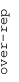
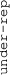

These results are also available as PDF and EPS documents.
Depending on your display resolution, scrolling or zooming may be necessary.
|  |
| 3 |
| 0 |
| -3 |
|  |
| GO:0007156 homophilic cell adhesion via plasma membrane adhesion molecules | |||||||||||
| GO:0071805 potassium ion transmembrane transport | |||||||||||
| GO:0005201 extracellular matrix structural constituent | |||||||||||
| GO:0008081 phosphoric diester hydrolase activity | |||||||||||
| GO:0050919 negative chemotaxis | |||||||||||
| GO:0008009 chemokine activity | |||||||||||
| GO:0072108 positive regulation of mesenchymal to epithelial transition involved in metanephros morphogenesis | |||||||||||
| GO:0006968 cellular defense response | |||||||||||
| GO:0030431 sleep | |||||||||||
| GO:0030883 endogenous lipid antigen binding | |||||||||||
| GO:0007218 neuropeptide signaling pathway | |||||||||||
| GO:0005758 mitochondrial intermembrane space | |||||||||||
| GO:0080008 Cul4-RING E3 ubiquitin ligase complex | |||||||||||
| GO:0008168 methyltransferase activity | |||||||||||
| GO:0016874 ligase activity | |||||||||||
| GO:0050790 regulation of catalytic activity | |||||||||||
| GO:0016311 dephosphorylation | |||||||||||
| GO:0004177 aminopeptidase activity | |||||||||||
| GO:0046777 protein autophosphorylation | |||||||||||
| GO:0030659 cytoplasmic vesicle membrane | |||||||||||
| GO:0004843 thiol-dependent ubiquitin-specific protease activity | |||||||||||
| GO:0035264 multicellular organism growth | |||||||||||
| GO:0001666 response to hypoxia | |||||||||||
| GO:0006865 amino acid transport | |||||||||||
| GO:0005637 nuclear inner membrane | |||||||||||
| GO:0007099 centriole replication | |||||||||||
| GO:0006611 protein export from nucleus | |||||||||||
| GO:0000177 cytoplasmic exosome (RNase complex) | |||||||||||
| GO:0035578 azurophil granule lumen | |||||||||||
| GO:0006103 2-oxoglutarate metabolic process | |||||||||||
| GO:0045540 regulation of cholesterol biosynthetic process | |||||||||||
| GO:0016226 iron-sulfur cluster assembly | |||||||||||
| GO:0016254 preassembly of GPI anchor in ER membrane | |||||||||||
| GO:0005547 phosphatidylinositol-3,4,5-trisphosphate binding | |||||||||||
| GO:0030663 COPI-coated vesicle membrane | |||||||||||
| GO:0002115 store-operated calcium entry | |||||||||||
| GO:0004866 endopeptidase inhibitor activity | |||||||||||
| GO:0045095 keratin filament | |||||||||||
| GO:0002377 immunoglobulin production | |||||||||||
| GO:0005549 odorant binding | |||||||||||
| GO:0042571 immunoglobulin complex, circulating | |||||||||||
| GO:1903231 mRNA binding involved in posttranscriptional gene silencing | |||||||||||
| GO:0050907 detection of chemical stimulus involved in sensory perception | |||||||||||
| GO:0006260 DNA replication | |||||||||||
| GO:0005681 spliceosomal complex | |||||||||||
| GO:0070126 mitochondrial translational termination | |||||||||||
| GO:0042254 ribosome biogenesis | |||||||||||
| GO:0000776 kinetochore | |||||||||||
| GO:0006914 autophagy | |||||||||||
| GO:0006457 protein folding | |||||||||||
| GO:0006368 transcription elongation from RNA polymerase II promoter | |||||||||||
| GO:0000151 ubiquitin ligase complex | |||||||||||
| GO:0006338 chromatin remodeling | |||||||||||
| GO:0004791 thioredoxin-disulfide reductase activity | |||||||||||
| GO:0000145 exocyst | |||||||||||
| GO:1990830 cellular response to leukemia inhibitory factor | |||||||||||
| GO:0001205 transcriptional activator activity, RNA polymerase II distal enhancer sequence-specific binding | |||||||||||
| GO:0030041 actin filament polymerization | |||||||||||
| GO:0009165 nucleotide biosynthetic process | |||||||||||
| GO:0006413 translational initiation | |||||||||||
| GO:0004596 peptide alpha-N-acetyltransferase activity | |||||||||||
| GO:0000932 P-body | |||||||||||
| GO:0071577 zinc II ion transmembrane transport | |||||||||||
| GO:1902041 regulation of extrinsic apoptotic signaling pathway via death domain receptors | |||||||||||
| GO:0005847 mRNA cleavage and polyadenylation specificity factor complex | |||||||||||
| GO:0051415 interphase microtubule nucleation by interphase microtubule organizing center | |||||||||||
| GO:0036498 IRE1-mediated unfolded protein response | |||||||||||
| GO:0015485 cholesterol binding | |||||||||||
| GO:2000114 regulation of establishment of cell polarity | |||||||||||
| GO:0035579 specific granule membrane | |||||||||||
| GO:0005750 mitochondrial respiratory chain complex III | |||||||||||
| GO:0006098 pentose-phosphate shunt | |||||||||||
| GO:0045669 positive regulation of osteoblast differentiation | |||||||||||
| GO:0006654 phosphatidic acid biosynthetic process | |||||||||||
| GO:1903507 negative regulation of nucleic acid-templated transcription | |||||||||||
| GO:0008022 protein C-terminus binding | |||||||||||
| GO:0060271 cilium assembly | |||||||||||
| GO:0005085 guanyl-nucleotide exchange factor activity | |||||||||||
| GO:0016829 lyase activity | |||||||||||
| GO:0006486 protein glycosylation | |||||||||||
| GO:0031463 Cul3-RING ubiquitin ligase complex | |||||||||||
| GO:0003950 NAD+ ADP-ribosyltransferase activity | |||||||||||
| GO:0042626 ATPase activity, coupled to transmembrane movement of substances | |||||||||||
| GO:0019079 viral genome replication | |||||||||||
| GO:0010807 regulation of synaptic vesicle priming | |||||||||||
| GO:0006805 xenobiotic metabolic process | |||||||||||
| GO:0031966 mitochondrial membrane | |||||||||||
| GO:0008139 nuclear localization sequence binding | |||||||||||
| GO:0000786 nucleosome | |||||||||||
| GO:0001518 voltage-gated sodium channel complex | |||||||||||
| GO:0019774 proteasome core complex, beta-subunit complex | |||||||||||
| GO:0031032 actomyosin structure organization |